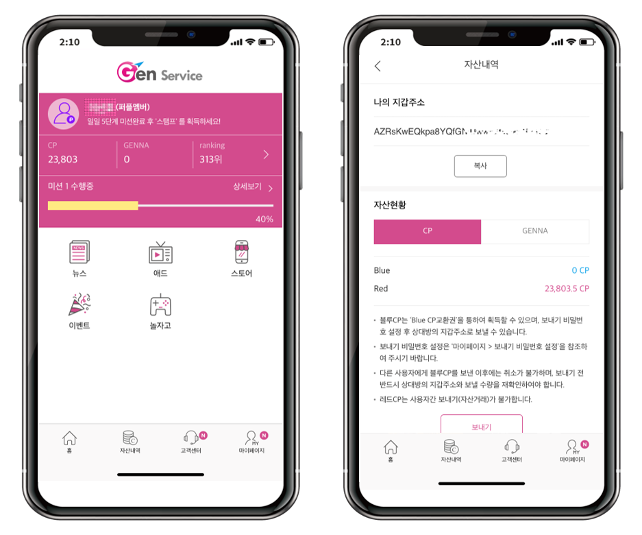
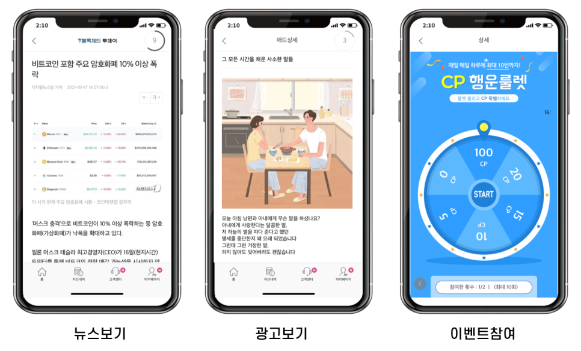

Main

Projects:
- - Gen service (18년 04월 ~ 19년 03월)
- - 개발 인원 : 4명
- - 담당 업무 : 서비스 개발 및 운영, 유지보수
젠서비스는 블록체인 기반 미디어 플랫폼으로 각 지역 언론사들이 제공하는 기사를 읽기만 해도 코인을 지급하는 미디어 플랫폼입니다.
블록체인 기반의 젠서비스는 메인 암호화폐인 다프와 서브 암호화폐인 젠토큰으로 사용자의 활동에 대한 보상을 지급합니다. 발급된 코인은 원화로 직접
구매가능하고 거래소에서 현금화도 가능합니다.
프로젝트 초기엔 신규 기능과 사용자 버그를 주로 담당했고, 이후엔 유지보수와 배포, 서버 모니터링을 메인으로 담당했습니다. 사용자가 늘어날수록
예상치도 못한 에러를 많이 마주하게 되었습니다. 팀원끼리 회의하며 서비스 안정화라는 목표에 달성하기 위해 DB 다중화, slow 쿼리 해결, Zabbix, AWS
도입 등 여러 기술을 테스트하고 도입한 게 가장 기억에 남습니다.
서비스는 Click WEB site 에서 확인및 다운로드할
수 있습니다.
Technologies:
- - JAVA
- - Spring Framework
- - JSP
- - MariaDB
- - MyBatis
- - SVN
- - AWS (EC2,RDS,S3)
- - OS(CentOS7)
Pages:
